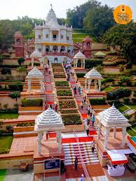

ABOUT HISTORY OF ALANDI...
* Alandi has a long history but gained prominence in the 13th century when Dnyaneshwar (1275–1296) decided to entomb, otherwise known as sanjeevan samadhi, himself in a samadhi, a form of shrine, under the then existing Siddheshwar temple complex in 1296.
* A temple was built over the Samadhi by Ambekar Deshpande in around 1580–1600.
* Further additions to the temple were made during the Maratha Empire era by Maratha nobles and the Peshwa.
* In 1778, Alandi was granted to Mahadji Shinde, the current Maratha ruler, by the Peshwa and, for two decades after that, the Shinde were the main sponsors of various renovations of the temple.
* In the 1820s, Haibatraobuva Arphalkar, a courtier of the Scindia of Gwalior, started the modern Palkhi tradition of carrying the paduka (sandals) of Dnyaneshwar to Pandharpur during the annual Wari. Haibatraobuva was laid to rest under the first step of the temple complex per his will.
* Despite being a small town, it was granted municipal status during the early British Raj. The council would raise revenue through levying tax on pilgrims which used to number around 50,000 at the end of 19th century.
Referances...
https://en.wikipedia.org/wiki/Alandi
https://www.nativeplanet.com/travel-guide/alandi-a-spiritual-connection-like-never-before-004626.html https://www.incredibleindia.org/content/incredible-india-v2/en/destinations/pune/alandi.html